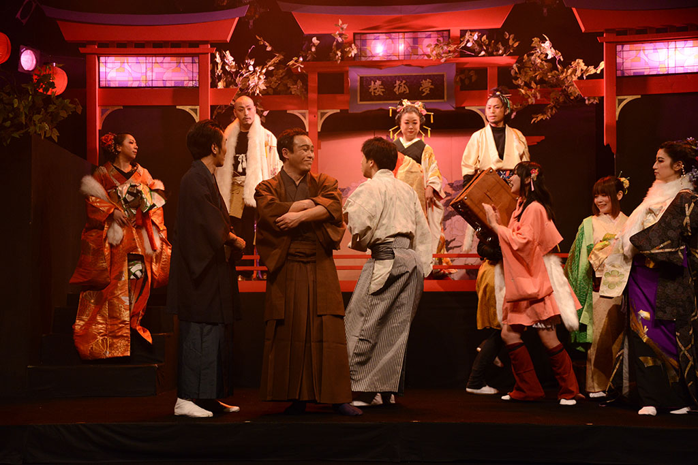

ＴＯＰへ
とりにくって？
公演記録
次回公演
チケット
こどもだましい
メール
新着情報
2015/08/27
とりにく番外編公演とりささ第二弾！「叶虚島」の特設ページが開設
2013/08/20
とりにく第六回「宴、疑う、唄方の」情報解禁
2012/06/23
とりにく番外編公演とりささ！「退魔師・裏」の特設ページが開設
2011/10/11
「本日開店・本日閉店」写真を公開いたしました。
2011/08/11 次回公演に「本日開店・本日閉店」と「退魔師・裏」を追加いたしました。
2011/01/15 大正妖奇譚公演写真を公開しました。
アルバム１
/
アルバム２
2010/07/29
大正妖奇譚 webアンケート受付開始いたしました。
2010/06/27
大正妖奇譚 チケット予約を開始いたしました。
2010/04/30
大正妖奇譚特設ページ公開開始いたいました。
2010/04/19
大正妖奇譚 稽古日誌始めました。
2010/04/17 大正妖奇譚 稽古が開始いたしました。
2010/02/14
ゴーストメイカーＰＶ公開
2010/02/12
第四回公演「人形屋」舞台写真公開。
2009/12/14 第四回公演「人形屋」無事閉幕いたしました。
2009/10/05 人形屋特設ページ公開開始いたいました。
CRich舞台芸術に登録してます。
観たい！でのご支援、観てきた！での感想など、ぜひお寄せ下さい。
稽古日誌です。
とりにくの過去公演PV一覧です
観劇のご参考にお使い下さい。
WEB CREATE by TORINIKU SEISAKU IINKAI